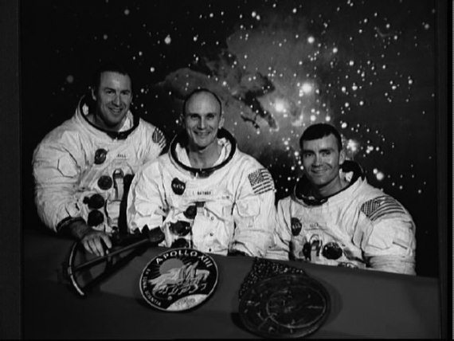
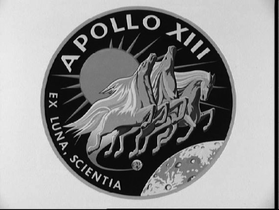
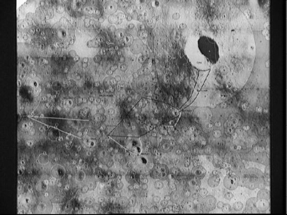

Миссия с несчастливым номером
Говорят, что во многих американских гостиницах нет тринадцатых номеров. Якобы суеверные жители Нового света стремятся избежать несчастий и сознательно исключают даже намек на возможные неприятности из своей повседневной жизни. Может, в каких-то американских городах так и поступают, но мне этого встречать не приходилось, хотя я бывал в США не единожды.
О том, что цифра «13» – число несчастливое, заставляет вспомнить полет корабля «Аполлон-13», едва не закончившийся страшной катастрофой. Вместе с тем, это одна из самых ярких страниц мировой космонавтики, продемонстрировавшая и надежность космической техники, и возможности человека. О ней стоит рассказать подробнее.
Третья лунная экспедиция была запланирована на апрель 1970 года. Астронавтам Джеймсу Ловеллу и Фреду Хейзу (Haise Fred Wallace) предстояло высадиться в районе кратера Фра Мауро и, как и предыдущим экипажам «Аполлонов», собрать образцы камней, развернуть комплекс оборудования, «оставить следы» на Луне. Третий член экипажа – Томас Маттингли (Mattingly ThomasKenneth) должен был ждать возвращения своих товарищей на борту командного модуля, вращаясь вокруг естественного спутника Земли.
Таковы были планы. Но за три дня до старта руководством НАСА, а точнее лично директором аэрокосмического агентства Томасом Пейном, было принято решение о замене в составе экипажа. Вместо Маттингли, не имевшего иммунитета к краснухе, в полет должен был отправиться Джон Суиджерт (John Swigert) (в другой транскрипции его фамилия звучит как Свайгерт). Решение более чем странное, но в НАСА чрезвычайно заботились о своей репутации и не хотели нехорошей огласки в случае заболевания во время полета кого-то из астронавтов.
Можно долго рассуждать о том, что испытал Маттингли, узнав об этом решении. Он ничего не сказал ни Пейну, ни своим коллегам. Только молча пожал руки Ловеллу, Хейзу и Суиджерту. И молчал еще три дня, пока шли последние приготовления к полету. Никуда не выходил из дома и смотрел, смотрел телевизор, ловя любое сообщение о подготовке экипажа, в состав которого должен был входить он. Лишь на второй день полета Маттингли переборол себя и отправился на космодром. Как будто какая-то сила подтолкнула его к этому.
Сейчас, когда известны все перипетии полета, можно только порадоваться, что произошло так, а не иначе. Ведь именно Маттингли пришлось сыграть одну из ведущих ролей в спасении экипажа «Аполлона-13». Находись он на борту, вряд ли смог бы найти выход из создавшегося положения. А на Земле смог это сделать.
Но об этом чуть позже, а сейчас представлю астронавтов, отправившихся в полет.
Для 41-летнего командира корабля Джеймса Ловелла это был четвертый полет. На апрель 1970 года он был абсолютным мировым рекордсменом по продолжительности пребывания в космосе. Свой первый полет он совершил в декабре 1965 года, когда вместе с Фрэнком Борманом провел более 13 суток внутри капсулы корабля «Джемини-7». Спустя год – новый полет. В декабре 1968 года Ловелл отправился в свою третью экспедицию на «Аполлоне-8», на этот раз к Луне. Кстати, Ловелл – один из трех американских астронавтов, которые летали к ночному светилу дважды. Но, в отличие от Юджина Сернана и Джона Янга, которые и кружили над Луной, и высаживались на ее поверхность, Ловелл видел ее только со стороны. Правда, и это немало, учитывая, что люди давно уже летают только по околоземной орбите.
Для двух других членов экипажа полет на «Аполлоне-13» был первым в их космической карьере. И Фред Хейз, и Джон Суиджерт пришли в отряд астронавтов НАСА в 1966 году. Готовились по программе «Аполлон». Хейз дублировал членов экипажа кораблей «Аполлон-8» и «Аполлон-11». Для Суиджерта это был первый опыт дублирования, закончившийся введением в состав основного экипажа.

Экипаж космического корабля «Аполлон-13»: Джеймс Ловелл, Фред Хейз, Джон Суиджерт
Да, сразу хочу сказать несколько слов о собственных именах, которые были даны командному и лунному модулям корабля «Аполлон-13». Первый окрестили «Одиссеем», а второй – «Аквариусом». Я сознательно использую название «Аквариус», хотя в современной литературе пишут «Водолей», применяя прямой перевод на русский английского «Aquarius». Но «Водолей» мне кажется менее поэтичным, чем «Аквариус», поэтому я буду называть его так, как привык.
«Аполлон-13» стартовал с мыса Канаверал 11 апреля в 13 часов 13 минут по времени Восточного побережья США. И вновь цифры «13», которые позволили суеверным людям говорить об обреченности миссии.
Через 13 минут после старта корабль вышел на околоземную орбиту, а еще через 2 часа 22 минуты – отправился в сторону Луны.
Во всех миссиях «Аполлонов» то время, которое тратится на преодоление пути от Земли до Луны, не самое интересное для рассказа. Астронавты занимаются проверками бортовых систем, вновь и вновь перечитывают инструкции, фотографируют звездное небо. Активной работой их не загружают, памятуя, что в последующие дни им потребуются все силы, чтобы работать на лунной поверхности. Ну а пока можно отдохнуть.
Таким же был и день 13 апреля (опять «13»!). К вечеру «Аполлон-13» удалился от Земли на расстояние в 330 тысяч километров. До Луны оставалось совсем немного.
Астронавты занимались тем же, чем и все предыдущие дни – тестированием бортовых систем. Хейз, выполнив очередные проверки в «Аквариусе», направлялся в «Одиссей»; Ловелл стоял наготове, чтобы закрыть переходный люк между лунным и командным модулями; Суиджерт по команде с Земли «размешал» кислород и водород в емкостях. Последнее на практике означало включение-выключение на несколько секунд тумблера «Вентилятор». Тогда-то и раздался громкий глухой удар. Корабль заметно качнуло. Астронавты услышали звон и звук сгибающегося металла. В шлемофонах устрашающе зазвенел сигнал тревоги. Это взорвался бак с кислородом № 2. Осколками был поврежден и резервуар № 1, а также ряд других жизненно важных систем корабля.
Первые тридцать минут ни на борту, ни в Центре управления полетом никто не понимал, что же произошло. За это время масштаб аварии принял катастрофический характер. Сигнальные лампочки на пультах управления вспыхивали одна за другой: «вышли из строя маршевые двигатели», «вышли из строя топливные элементы», «вышел из строя кислородный резервуар № 2». Мигнул и самостоятельно начал перезагрузку бортовой компьютер. Часть телеметрической информации, которая могла позволить оценить масштаб аварии, оказалась потерянной.
Ловелл и Хейз бросились закрывать люк в лунный модуль, полагая, что «Аквариус» поврежден метеоритом и его нужно срочно отделить от остальных отсеков. Однако лунный модуль был цел и невредим. И тут командира «Аполлона-13» прошиб холодный пот. Случайно взглянув в иллюминатор, он увидел, что все обозримое пространство заполняло облако неизвестно откуда взявшихся металлических осколков, а из обшивки служебного модуля вырывалась струя газа или жидкости, взметнувшись на десятки метров. О происходящем тут же было доложено в Центр управления полетом. В эфире повисла гнетущая тишина.
Ловелл, вероятно, первым из экипажа понял, что с планами высадки на Луну придется распрощаться. Но ни он, ни руководители полета в Хьюстоне не могли в тот момент даже представить, какие нужно будет предпринять усилия, чтобы вернуться на Землю. Как было потом подсчитано, через 38 минут после аварии шансы на благополучный исход составляли 1 к 9.
Первое, что было сделано, это активирован компьютер и система жизнеобеспечения «Аквариуса», который стал играть роль спасательной шлюпки. Системы же «Одиссея» начали выключаться, чтобы сохранить ресурс бортовых батарей. За пять минут до полуночи главный компьютер командного модуля «уснул» и было неизвестно, включится ли он в нужный момент.
На Земле также предпринимались меры для спасения экипажа. Все специалисты, которые могли хоть что-то сделать в аварийной ситуации, были срочно доставлены в Хьюстон. Их собирали по всей стране: вынимали из уютных постелей, из-за праздничных столов, из темных залов кинотеатров.
Уже через два часа после аварии состоялось первое заседание специального комитета НАСА. Надо отдать должное сменному руководителю полетом Глину Ланни, проводившему заседание. Именно он предложил главное решение, ставшее основой для всех последующих действий: «Неудачу из списка возможностей исключить!».
А в космосе, между тем, астронавты боролись за свою жизнь. Несмотря на взрыв резервуаров с кислородом, экипажу не грозило удушье. Достаточно было и энергии, если, конечно, не расходовать ее попусту. А вот с водой были проблемы. Даже при максимальной экономии последняя капля была бы израсходована за пять часов до предполагаемого момента посадки.
Вся ответственность за управление терпящим бедствие кораблем легла на плечи пилота лунного модуля Фреда Хейза. Он лучше всех знал «Аквариус» и, значит, должен был спасти всех.
Вести многотонный корабль с помощью двигателей лунного модуля – задача не из легких. Главное, что предстояло сделать – стабилизировать «Аполлон-13» двигателями ориентации. Если бы это не удалось сделать, то с коррекцией траектории полета возникли бы трудноразрешимые проблемы. В этой ситуации двигатели «Аквариуса» либо не включились бы вообще, либо забросили корабль туда, где его никакой ЦУП не нашел бы.
Ночь на 14 апреля оказалась для экипажа бессонной. Хуже всего пришлось Джону Суиджерту. Как пилот командного модуля, он оказался не у дел, и ему пришлось сидеть на корточках за креслами Ловелла и Хейза, наблюдая за их борьбой с непослушным кораблем и сознавая собственную беспомощность. А между тем неумолимо приближалось время, когда предстояло совершить первую коррекцию и перевести корабль на траекторию возвращения к дому.
Через пять с половиной часов после аварии были включены двигатели посадочной ступени лунного модуля. «Аполлон-13» сошел с «гибридной траектории», по которой приближался к Луне, зашел за спутник, совершил маневр в его гравитационном поле и, как камень, выпущенный из пращи, устремился к Земле. Это в книге все действия астронавтов уместились в одну строчку. А в реальности потребовалось гораздо больше времени и гораздо больше усилий, чтобы мельком взглянуть на лунную поверхность и целиком сосредоточиться на иных проблемах.
Конечно, космонавтам было жаль, что мечта всей их жизни проплывает мимо иллюминаторов, маня к себе и отталкивая от себя. Кто из них сожалел больше, сказать трудно. Может быть, Ловелл, который вторично оказался в окрестностях Луны и вновь только смотрел на нее со стороны. А может быть, Суиджерт, единственный холостяк в экипаже, для которого космос был смыслом всей жизни. А может, Хейз, который вместо того, чтобы опустить «Аквариус» у кратера Фра Мауро, теперь должен был довести корабль до Земли.
Но вот коррекция завершена, и стало ясно, что она прошла успешно. Появилась надежда на благополучный исход полета. Мизерная надежда, но тогда она была сродни Эвересту.

Эмблема ««несчастливого» ««Аполлона»
Позже Ловелл вспоминал, что в те минуты он не думал о судьбе. В голове вертелась только одна мысль: «Любой ценой вернуться на Землю. Лучше сгореть в атмосфере, чем стать первыми, не вернувшимися из космоса на родную планету». Отправив своих товарищей отдыхать, командир продолжал вглядываться в голубой шарик на звездном небе, к которому теперь стремился «Аполлон-13».
Тем временем подошел срок второй коррекции. Корабль предстояло разогнать, чтобы уменьшить время возвращения на Землю и тем самым повысить шансы на благополучный исход эпопеи. Когда Ловеллу удалось по Солнцу сориентировать корабль, в ЦУПе так и не поняли, как он это сделал. Но впервые за сутки на лицах присутствующих появились улыбки.
Вторая коррекция удалась. Несмотря на риск, экипаж сделал это. Но до дома оставалось еще три дня пути. И проблем предстояло преодолеть еще очень и очень много.
Вечером 14 апреля зажегся индикатор углекислого газа. Двухместный лунный модуль переполнялся углекислотой, выдыхаемой тремя астронавтами. В ход пошли самодельные фильтры, которые изготовили члены экипажа. Им потребовалось на это в два раза больше времени, чем при сборке опытных образцов на Земле, но это был хороший результат. Пригодился и опыт Ловелла, которому пришлось участвовать в изготовлении «самоделок» во время полета «Аполлона-8».
Устранив углекислотную угрозу, экипаж остро почувствовал усталость. Командир не спал уже тридцать шесть часов, а ситуация требовала постоянного бодрствования одного из пилотов лунного модуля. Каждый час требовалось разворачивать корабль и переключать антенны. Суиджерт, при всем желании, был не в состоянии подменить Ловелла и Хейза.
А внутри корабля температура неумолимо понижалась. Вместе с холодом подкрадывались страх и неуверенность, которые совсем не способствовала мыслям о благополучном исходе.
Почти в это же время всплыла еще одна проблема: заряда бортовых батарей могло не хватить на оживление командного модуля. Если бы это не удалось сделать, то все усилия, предпринимаемые астронавтами, были бы напрасны. Над решением этой задачи бились на Земле. Предстояло соединить электроцепи лунного и командного модуля, чтобы создать единую систему. Кроме того, предстояло выработать такой порядок включения тумблеров, чтобы не потерять ни единого ватта энергии.
В начале этой главы, рассказывая о неожиданной замене в составе экипажа «Аполлона-13», я намекал на роль отстраненного от полета Томаса Маттингли в спасении экипажа. Именно он, забыв об обидах и усталости, денно и нощно в тренажере лунной кабины на Земле искал ту единственную комбинацию переключения тумблеров, которая могла сохранить жизни его товарищам.
Уже когда все осталось позади, Маттингли рассказал журналистам, что в одну из этих напряженных ночей он вышел на улицу подышать свежим воздухом. Подняв голову, он был просто поражен видом здания Центра управления полетом. В огромном корпусе были освещены все (!) окна.
Пока в Хьюстоне думали, как посадить корабль, на борту происходили все новые и новые события. Днем 15 апреля что-то вновь грохнуло. Дежуривший в «Аквариусе» Хейз бросился к иллюминатору и увидел истекавший из основания лунного модуля белый пар. «Неужели мы потеряли спасательную шлюпку?», – промелькнула мысль. На счастье, это сработал предохранительный клапан гелиевого баллона. Земля успокоила: гелия на борту было в избытке.
Но тут замигал датчик тревоги: перегрев одной из химических батарей. Это было уже серьезно. Не успокоили даже заверения ЦУПа, что тревога ложная. Лампочка мигала пять часов, не добавляя оптимизма.
Проведенная вечером того же дня третья коррекция прошла успешно. Земля поблагодарила смертельно уставший экипаж за отличную работу. Шел пятидесятый час с момента аварии, борьба за жизнь продолжалась. Теперь оставалось только ждать. До приближения к Земле сделать что-либо астронавты уже не могли.
В ночь на 16 апреля «с мясом» вырвало предохранительный клапан гелиевого баллона посадочного двигателя лунной кабины. Этот движок трижды спасал экипаж и вот его не стало. В любой другой ситуации это было бы воспринято очень остро. Но астронавты устали до такой степени, что прореагировали без всяких эмоций: «Ну вырвало и вырвало.».
К утру в лунном модуле стало по-настоящему холодно. Если раньше астронавты ощущали лишь понижение температуры, то теперь их дом превратился в настоящий холодильник. На приборах выступил иней, изо рта астронавтов при дыхании вырывались клубы замерзшего воздуха. Уснуть невозможно. Все мысли об одном – как согреться.
Чем ближе была Земля, тем холоднее становилось в «Аквариусе». А в это время на Земле Маттингли, приложив неимоверные усилия, нашел ту комбинацию переключения тумблеров, которая обеспечивала необходимый минимум энергии для посадки. Вечером он начал диктовать экипажу последовательность работы.
И вот, наконец, наступило утро 17 апреля. Этот день решал все: либо корабль благополучно возвратится на Землю, либо произойдет трагедия, которая будет фактически означать закрытие программы «Аполлон» и на долгие годы закроет путь американским астронавтам в космос.
В 2 часа 35 минут по времени Восточного побережья США поступила команда с Земли: «Все включать». Ловелл, Хейз и Суиджерт приступили к реализации программы, составленной Маттингли. Защелкали тумблеры, начали оживать системы.
Все действия, которые выполняли астронавты, были необходимыми для совершения посадки, но были они и чрезвычайно опасными, о чем в те минуты никто не хотел думать. Опасность состояла в том, что заиндевевшие контакты могли заискрить, а в кислородной атмосфере корабля, за три года до этого сгубившей экипаж «Аполлона-1», любая искра могла привести к катастрофе. К счастью, все прошло нормально. В «Аквариусе» потеплело, и вместе с теплом пришла уверенность в благополучном исходе.
В 5 часов 10 минут началось включение систем командного модуля «Одиссей». Суиджерт, который в течение трех с лишним суток был вынужден лишь наблюдать за работой товарищей, получил возможность продемонстрировать свое мастерство. Теперь на его плечи ложилась ответственность за жизнь экипажа.
В 6 часов 52 минуты началась четвертая коррекция траектории полета. И началась она с ошибочного вызова Ловеллом компьютерной программы запуска посадочного двигателя. В ЦУПе заметили ошибку и отменили команду. В подобных действиях командира не было ничего удивительного: сказывалось нечеловеческое напряжение, последних дней. К тому же Ловелл пил меньше всех воды, что только ухудшало его состояние.
Почти у самой Земли экипаж провел последние перед посадкой работы: перешел в командный модуль, отделил лунную кабину, сориентировал корабль.
И вот «Одиссей» входит в земную атмосферу. Вся Америка приникла к экранам телевизоров и динамикам радиоприемников. Сейчас за посадкой «Аполлона-13» следил бы весь мир, но и тогда аудитория была огромна.
Когда капсулу окутало облако плазмы, связь оборвалась. Перерыв должен был составить 180 секунд, после которого стало бы ясно: жив экипаж или погиб. Томительно тянется время.
180 секунд – связи нет.
185 секунд – связи нет.
190 секунд – связи нет.
В эти мгновения по Америке прокатилась волна инфарктов. У специалистов, следивших за посадкой, прибавилось немало седых волос.
193 секунды – связи нет.
194 секунды – сквозь треск помех пробивается голос Джона Суиджерта: «Все о’кей!».
Зал центра управления полетом в Хьюстоне сотряс радостный крик.
А над водной гладью Тихого океана расцвел купол парашюта, под которым опускалась капсула «Аполлона-13». Спасатели, доставленные к месту приводнения на вертолетах, открыли люк «Одиссея» и их окутало облако морозного воздуха. А из чрева корабля на них смотрели уставшие, но счастливые глаза астронавтов, вернувшихся домой.
Так закончилась эта беспримерная по мужеству космическая эпопея.
Членам экипажа «Аполлона-13» больше не довелось слетать в космос. Одного из них – Джона Леонарда Суиджерта – уже нет в живых. 27 декабря 1982 года, всего через полтора месяца после победы на выборах в палату представителей Конгресса США, он умер от рака кости.

Луна из кабины «Аполлона-13»
Джеймс Ловелл и Фрэд Хейз еще некоторое время работали в НАСА.
Ловелл ушел из отряда астронавтов в 1973 году, некоторое время служил на флоте, а потом возглавил созданную им компанию «Ловелл Коммуникэйшн». В 1994 году он вместе с Джеффри Клугером (Jeffrey Kluger) выпустил книгу «Аполлон-13», в которой рассказал о пережитом. Спустя год Рон Ховард снял одноименный блокбастер, который до сих пор регулярно показывают многие телеканалы мира.
Хейз входил в состав дублирующего экипажа корабля «Аполлон-16», планировался к включению в экипаж «Аполлона-19», но после закрытия лунной программы, не дожидаясь полетов кораблей многоразового использования, ушел в частный бизнес. В настоящее время на пенсии и не очень любит вспоминать пережитое.
Каким бы трудным ни было возвращение «Аполлона-13» домой, но оно позволило продолжить реализацию лунной программы. В 1971–1972 годах состоялись еще четыре высадки на поверхность Луны, в том числе в районе кратера Фра Мауро, где так и не смогли высадиться Ловелл и Хейз. Это сделали в феврале следующего года Алан Шепард и Эдгар Митчелл (Edgar Mitchell).
Уже почти сорок лет человечество не совершает полетов по открытой в 1968 году регулярной трассе «Земля – Луна – Земля». Ожидается, что лет через десять полеты возобновятся. Но отправятся на свидание с нашим естественным спутником другие корабли. И поведут их те, кто знает об эпопее «Аполлона-13» только по книгам и фильмам.
Но все равно мысленно они будут оглядываться на опыт своих предшественников. И, может быть, опыт, приобретенный когда-то Ловеллом, Хейзом и Суиджертом, в чем-то поможет им, и даже, может быть, спасет чьи-то жизни. Хочется в это верить и очень хочется узнать имя того человека, который следующим ступит на поверхность Луны. Только запомните – он станет ТРИНАДЦАТЫМ землянином, которому суждено пройтись по лунной пыли.